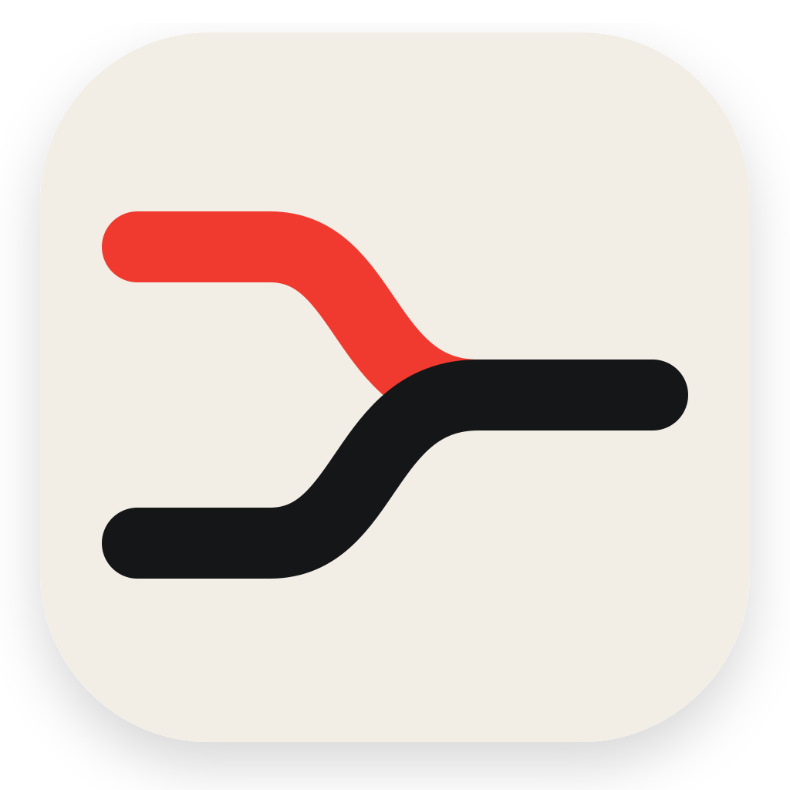

我的声音
会议声音
双音源
朱红与近黑代表麦克风和电脑声音。它们并列存在，没有主次。
TWO VOICES. ONE FLOW.
你说的话，和会议另一边的声音，并行进入 Murmur，最终变成同一段清晰、连续的文字。

朱红与近黑代表麦克风和电脑声音。它们并列存在，没有主次。
层叠线条来自转写任务 Stack：上一段处理中，下一段已经开始。
两条声流最终汇成一条水平线，象征文字按说话顺序进入输入框。